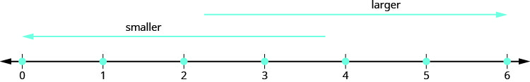
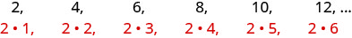
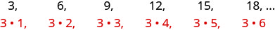
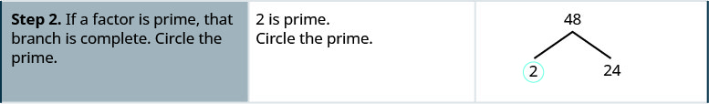
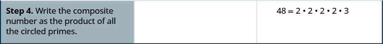
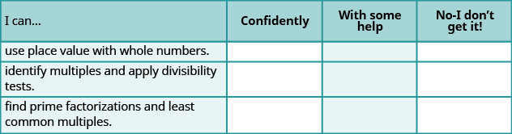

Introduction to Whole Numbers
As we begin our study of elementary algebra, we need to refresh some of our skills and vocabulary. This chapter will focus on whole numbers, integers, fractions, decimals, and real numbers. We will also begin our use of algebraic notation and vocabulary.
Use Place Value with Whole Numbers
The most basic numbers used in algebra are the numbers we use to count objects in our world: 1, 2, 3, 4, and so on. These are called the counting numbers. Counting numbers are also called natural numbers. If we add zero to the counting numbers, we get the set of whole numbers.
Counting Numbers: 1, 2, 3, …
Whole Numbers: 0, 1, 2, 3, …
The notation “…” is called ellipsis and means “and so on,” or that the pattern continues endlessly.
We can visualize counting numbers and whole numbers on a number line (see Figure 1).

Our number system is called a place value system, because the value of a digit depends on its position in a number. Figure 2 shows the place values. The place values are separated into groups of three, which are called periods. The periods are ones, thousands, millions, billions, trillions, and so on. In a written number, commas separate the periods.
![This figure is a table illustrating the number 5,278,194 within the place value system. The table is shown with a header row, labeled “Place Value”, divided into a second header row labeled “Trillions”, “Billions”, “Millions”, “Thousands” and “Ones”. Under the header “Trillions” are three labeled columns, written from bottom to top, that read “Hundred trillions”, “Ten trillions” and “Trillions”. Under the header “Billions” are three labeled columns, written from bottom to top, that read “Hundred billions”, “Ten billions” and “Billions”. Under the header “Millions” are three labeled columns, written from bottom to top, that read “Hundred millions”, “Ten millions” and “Millions”. Under the header “Thousands” are three labeled columns, written from bottom to top, that read “Hundred thousands”, “Ten thousands” and “Thousands”. Under the header “Ones” are three labeled columns, written from bottom to top, that read “Hundreds”, “Tens” and “Ones”. From left to right, below the columns labeled “Millions”, “Hundred thousands”, “Ten thousands”, “Thousands”, “Hundreds”, “Tens”, and “Ones”, are the following values: 5, 2, 7, 8, 1, 9, 4. This means there are 5 millions, 2 hundred thousands, 7 ten thousands, 8 thousands, 1 hundreds, 9 tens, and 4 ones in the number five million two hundred seventy-nine thousand one hundred ninety-four.](../../media/CNX_ElemAlg_Figure_01_01_002_new.jpg)
In the number 63,407,218, find the place value of each digit:
- ⓐ 7
- ⓑ 0
- ⓒ 1
- ⓓ 6
- ⓔ 3
Solution
Solution
Place the number in the place value chart:
![This figure is a table illustrating the number 63,407,218 within the place value system. The table is shown with a header row, labeled “Place Value”, divided into a second header row labeled “Trillions”, “Billions”, “Millions”, “Thousands” and “Ones”. Under the header “Trillions” are three labeled columns, written from bottom to top, that read “Hundred trillions”, “Ten trillions” and “Trillions”. Under the header “Billions” are three labeled columns, written from bottom to top, that read “Hundred billions”, “Ten billions” and “Billions”. Under the header “Millions” are three labeled columns, written from bottom to top, that read “Hundred millions”, “Ten millions” and “Millions”. Under the header “Thousands” are three labeled columns, written from bottom to top, that read “Hundred thousands”, “Ten thousands” and “Thousands”. Under the header “Ones” are three labeled columns, written from bottom to top, that read “Hundreds”, “Tens” and “Ones”. From left to right, below the columns labeled “Ten millions”, “Millions”, “Hundred thousands”, “Ten thousands”, “Thousands”, “Hundreds”, “Tens”, and “Ones”, are the following values: 6, 3, 4, 0, 7, 2, 1, 8. This means there are 6 ten millions, 3 millions, 4 hundred thousands, 0 ten thousands, 7 thousands, 2 hundreds, 1 ten, and 8 ones in the number sixty-three million, four hundred seven thousand, two hundred eighteen.](../../media/CNX_ElemAlg_Figure_01_01_003_img_new.jpg)
ⓐ The 7 is in the thousands place.
ⓑ The 0 is in the ten thousands place.
ⓒ The 1 is in the tens place.
ⓓ The 6 is in the ten-millions place.
ⓔ The 3 is in the millions place.
When you write a check, you write out the number in words as well as in digits. To write a number in words, write the number in each period, followed by the name of the period, without the s at the end. Start at the left, where the periods have the largest value. The ones period is not named. The commas separate the periods, so wherever there is a comma in the number, put a comma between the words (see Figure 3). The number 74,218,369 is written as seventy-four million, two hundred eighteen thousand, three hundred sixty-nine.
![In this figure, the numbers 74, 218 and 369 are listed in a row, separated by commas. Each number has a curly bracket beneath it with the word “millions” written below the number 74, “thousands” written below the number 218, and “ones” written below the number 369. A left-facing arrow points at these three words, labeling them “periods”. One row down is the number “74”, a right-facing arrow and the words “Seventy-four million” followed by a comma. The next row below is the number “218”, a right-facing arrow and the words “two hundred eighteen thousand” followed by a comma. On the bottom row is the number “369”, a right-facing arrow and the words “three hundred sixty-nine”.](../../media/CNX_ElemAlg_Figure_01_01_004_new.jpg)
Name the number 8,165,432,098,710 using words.
Solution
Solution
Name the number in each period, followed by the period name.
![In this figure, the numbers 8, 165, 432, 098 and 710 are listed in a row, separated by commas. Each number has a horizontal bracket beneath with the word “trillions” written below the number 8, “billions” written below the number 165, “millions” written below the number 432, “thousands” written below the number 098, and “ones” written below the number 710. One row down is the number 8, a right-facing arrow and the words “Eight trillion” followed by a comma. On the next row below is the number 165, a right-facing arrow and the words “One hundred sixty-five billion” followed by a comma. On the next row below is the number 432, a right-facing arrow and the words “Four hundred thirty-two million” followed by a comma. On the next row below is the number “098”, a right-facing arrow and the words “Ninety-eight thousand” followed by a comma. On the bottom row is the number 710, a right-facing arrow and the words “Seven hundred ten”.](../../media/CNX_ElemAlg_Figure_01_01_005_img_new.jpg)
Put the commas in to separate the periods.
So, is named as eight trillion, one hundred sixty-five billion, four hundred thirty-two million, ninety-eight thousand, seven hundred ten.
We are now going to reverse the process by writing the digits from the name of the number. To write the number in digits, we first look for the clue words that indicate the periods. It is helpful to draw three blanks for the needed periods and then fill in the blanks with the numbers, separating the periods with commas.
Write nine billion, two hundred forty-six million, seventy-three thousand, one hundred eighty-nine as a whole number using digits.
Solution
Solution
Identify the words that indicate periods.
Except for the first period, all other periods must have three places. Draw three blanks to indicate the number of places needed in each period. Separate the periods by commas.
Then write the digits in each period.

The number is 9,246,073,189.
In 2013, the U.S. Census Bureau estimated the population of the state of New York as 19,651,127. We could say the population of New York was approximately 20 million. In many cases, you don’t need the exact value; an approximate number is good enough.
The process of approximating a number is called rounding. Numbers are rounded to a specific place value, depending on how much accuracy is needed. Saying that the population of New York is approximately 20 million means that we rounded to the millions place.
How to Round Whole Numbers
Round 23,658 to the nearest hundred.
Solution
Solution
![This figure is a table that has three columns and four rows. The first column is a header column, and it contains the names and numbers of each step. The second column contains further written instructions. The third column contains the numbers corresponding with the written steps and instructions. In the top row, the first cell says: “Step 1. Locate the given place value with an arrow. All digits to the left do not change.” In the the second cell, the instructions say: “Locate the hundreds place in 23,658.” In the third cell, there is the number 23,658 with an arrow pointing to the digit 6, labeling it “hundreds place.”](../../media/CNX_ElemAlg_Figure_01_01_008a_new.jpg)
![One row down, the first cell says: “Step 3. Is this digit greater than or equal to 5? Yes—add 1 to the digit in the given place value. No—do not change the digit in the given place value.” In the second cell, the instructions say: “Add 1 to the 6 in the hundreds place, since 5 is greater than or equal to 5.” The third cell contains the number 23,658 again, with an arrow pointing at the digit 6 and the text “add 1”. There is also a curly bracket under the digits 5 and 8, with an arrow pointing at them and the text “replace with 0s.”](../../media/CNX_ElemAlg_Figure_01_01_008c_new.jpg)

Round to the nearest:
- ⓐ hundred
- ⓑ thousand
- ⓒ ten thousand
Solution
Solution
| Locate the hundreds place in 103,978. | |
| Underline the digit to the right of the hundreds place. | |
| Since 7 is greater than or equal to 5, add 1 to the 9. Replace all digits to the right of the hundreds place with zeros. |  |
| So, 104,000 is 103,978 rounded to the nearest hundred. |
| Locate the thousands place and underline the digit to the right of the thousands place. |  |
| Since 9 is greater than or equal to 5, add 1 to the 3. Replace all digits to the right of the hundreds place with zeros. |  |
| So, 104,000 is 103,978 rounded to the nearest thousand. |
| Locate the ten thousands place and underline the digit to the right of the ten thousands place. |

|
| Since 3 is less than 5, we leave the 0 as is, and then replace the digits to the right with zeros. |

|
| So, 100,000 is 103,978 rounded to the nearest ten thousand. |
In algebra, we use a letter of the alphabet to represent a number whose value may change or is unknown. Commonly used symbols are a, b, c, m, n, x, and y. Further discussion of constants and variables appears later in this section.
Identify Multiples and Apply Divisibility Tests
The numbers 2, 4, 6, 8, 10, and 12 are called multiples of 2. A multiple of 2 can be written as the product of 2 and a counting number.

Similarly, a multiple of 3 would be the product of a counting number and 3.

We could find the multiples of any number by continuing this process.
Table 4 shows the multiples of 2 through 9 for the first 12 counting numbers.
| Counting Number | 1 | 2 | 3 | 4 | 5 | 6 | 7 | 8 | 9 | 10 | 11 | 12 |
|---|---|---|---|---|---|---|---|---|---|---|---|---|
| Multiples of 2 | 2 | 4 | 6 | 8 | 10 | 12 | 14 | 16 | 18 | 20 | 22 | 24 |
| Multiples of 3 | 3 | 6 | 9 | 12 | 15 | 18 | 21 | 24 | 27 | 30 | 33 | 36 |
| Multiples of 4 | 4 | 8 | 12 | 16 | 20 | 24 | 28 | 32 | 36 | 40 | 44 | 48 |
| Multiples of 5 | 5 | 10 | 15 | 20 | 25 | 30 | 35 | 40 | 45 | 50 | 55 | 60 |
| Multiples of 6 | 6 | 12 | 18 | 24 | 30 | 36 | 42 | 48 | 54 | 60 | 66 | 72 |
| Multiples of 7 | 7 | 14 | 21 | 28 | 35 | 42 | 49 | 56 | 63 | 70 | 77 | 84 |
| Multiples of 8 | 8 | 16 | 24 | 32 | 40 | 48 | 56 | 64 | 72 | 80 | 88 | 96 |
| Multiples of 9 | 9 | 18 | 27 | 36 | 45 | 54 | 63 | 72 | 81 | 90 | 99 | 108 |
| Multiples of 10 | 10 | 20 | 30 | 40 | 50 | 60 | 70 | 80 | 90 | 100 | 110 | 120 |
Another way to say that 15 is a multiple of 3 is to say that 15 is divisible by 3. That means that when we divide 15 by 3, we get a counting number. In fact, is 5, so 15 is
Look at the multiples of 5 in Table 4. They all end in 5 or 0. Numbers with last digit of 5 or 0 are divisible by 5. Looking for other patterns in Table 4 that shows multiples of the numbers 2 through 9, we can discover the following divisibility tests:
Is 5,625 divisible by 2? By 3? By 5? By 6? By 10?
Solution
Solution
| Is 5,625 divisible by 2? | |
| Does it end in 0,2,4,6, or 8? | No. 5,625 is not divisible by 2. |
| Is 5,625 divisible by 3? | |
| What is the sum of the digits? | |
| Is the sum divisible by 3? | Yes. 5,625 is divisble by 3. |
| Is 5,625 divisible by 5 or 10? | |
| What is the last digit? It is 5. | 5,625 is divisble by 5 but not by 10. |
| Is 5,625 divisible by 6? | |
| Is it divisible by both 2 and 3? | No, 5,625 is not divisible by 2, so 5,625 is not divisible by 6. |
Find Prime Factorizations and Least Common Multiples
In mathematics, there are often several ways to talk about the same ideas. So far, we’ve seen that if m is a multiple of n, we can say that m is divisible by n. For example, since 72 is a multiple of 8, we say 72 is divisible by 8. Since 72 is a multiple of 9, we say 72 is divisible by 9. We can express this still another way.
Since we say that 8 and 9 are factors of 72. When we write we say we have factored 72.

Other ways to factor 72 are Seventy-two has many factors: 1, 2, 3, 4, 6, 8, 9, 12, 18, 36, and 72.
Some numbers, like 72, have many factors. Other numbers have only two factors.
The counting numbers from 2 to 19 are listed in Figure 4, with their factors. Make sure to agree with the “prime” or “composite” label for each!
![A table is shown with eleven rows and seven columns. The first row is a header row, and each cell labels the contents of the column below it. In the header row, the first three cells read from left to right “Number”, “Factors”, and “Prime or Composite?” The entire fourth column is blank. The last three cells read from left to right “Number”, “Factor”, and “Prime or Composite?” again. In each subsequent row, the first cell contains a number, the second contains its factors, and the third indicates whether the number is prime or composite. The three columns to the left of the blank middle column contain this information for the number 2 through 10, and the three columns to the right of the blank middle column contain this information for the number 11 through 19. On the left side of the blank column, in the first row below the header row, the cells read from left to right: “2”, “1,2”, and “Prime”. In the next row, the cells read from left to right: “3”, “1,3”, and “Prime”. In the next row, the cells read from left to right: “4”, “1,2,4”, and “Composite”. In the next row, the cells read from left to right: “5”, “1,5”, and “Prime”. In the next row, the cells read from left to right: “6”, “1,2,3,6” and “Composite”. In the next row, the cells read from left to right: “7”, “1,7”, and “Prime”. In the next row, the cells read from left to right: “8”, “1,2,4,8”, and “Composite”. In the next row, the cells read from left to right: “9”, “1,3,9”, and “Composite”. In the bottom row, the cells read from left to right: “10”, “1,2,5,10”, and “Composite”. On the right side of the blank column, in the first row below the header row, the cells read from left to right: “11”, “1,11”, and “Prime”. In the next row, the cells read from left to right: “12”, “1,2,3,4,6,12”, and “Composite”. In the next row, the cells read from left to right: “13”, “1,13”, and “Prime”. In the next row, the cells read from left to right “14”, “1,2,7,14”, and “Composite”. In the next row, the cells read from left to right: “15”, “1,3,5,15”, and “Composite”. In the next row, the cells read from left to right: “16”, “1,2,4,8,16”, and “Composite”. In the next row, the cells read from left to right, “17”, “1,17”, and “Prime”. In the next row, the cells read from left to right, “18”, “1,2,3,6,9,18”, and “Composite”. In the bottom row, the cells read from left to right: “19”, “1,19”, and “Prime”.](../../media/CNX_ElemAlg_Figure_01_01_015_img_new.jpg)
The prime numbers less than 20 are 2, 3, 5, 7, 11, 13, 17, and 19. Notice that the only even prime number is 2.
A composite number can be written as a unique product of primes. This is called the prime factorization of the number. Finding the prime factorization of a composite number will be useful later in this course.
To find the prime factorization of a composite number, find any two factors of the number and use them to create two branches. If a factor is prime, that branch is complete. Circle that prime!
If the factor is not prime, find two factors of the number and continue the process. Once all the branches have circled primes at the end, the factorization is complete. The composite number can now be written as a product of prime numbers.
How to Find the Prime Factorization of a Composite Number
Factor 48.
Solution
Solution
![This figure is a table that has three columns and four rows. The first column is a header column, and it contains the names and numbers of each step. The second column contains further written instructions and some math. The third column contains most of the math work corresponding with the written steps and instructions. In the top row, the first cell says: “Step 1. Find two factors whose product is the given number. Use these numbers to create two branches.” The second cell contains the algebraic equation 48 equals 2 times 24. In the third cell, there is a factor tree with 48 at the top. Two branches descend from 48 and terminate at 2 and 24 respectively.](../../media/CNX_ElemAlg_Figure_01_01_016a_new.jpg)

![One row down, the first cell says: “Step 3. If a factor is not prime, write it as the product of two factors and continue the process.” In the second cell, the instructions say: “24 is not prime. Break it into 2 more factors.” The third cell contains the original factor tree, with 48 at the top and two downward-pointing branches terminating at 2, which is underlined, and 24. Two more branches descend from 24 and terminate at 4 and 6 respectively. One line down, the instructions in the middle of the cell say “4 and 6 are not prime. Break them each into two factors.” In the cell on the right, the factor tree is repeated once more. Two branches descend from the 4 and terminate at 2 and 2. Both 2s are circled. Two more branches descend from 6 and terminate at a 2 and a 3, which are both circled. The instructions on the left say “2 and 3 are prime, so circle them.”](../../media/CNX_ElemAlg_Figure_01_01_016c_new.jpg)

We say is the prime factorization of 48. We generally write the primes in ascending order. Be sure to multiply the factors to verify your answer!
If we first factored 48 in a different way, for example as the result would still be the same. Finish the prime factorization and verify this for yourself.
Find the prime factorization of 252.
Solution
Solution
|
Step 1. Find two factors whose product is 252. 12 and 21 are not prime. Break 12 and 21 into two more factors. Continue until all primes are factored. |
 |
| Step 2. Write 252 as the product of all the circled primes. |
One of the reasons we look at multiples and primes is to use these techniques to find the least common multiple of two numbers. This will be useful when we add and subtract fractions with different denominators. Two methods are used most often to find the least common multiple and we will look at both of them.
The first method is the Listing Multiples Method. To find the least common multiple of 12 and 18, we list the first few multiples of 12 and 18:
![Two rows of numbers are shown. The first row begins with 12, followed by a colon, then 12, 24, 36, 48, 60, 72, 84, 96, 108, and an elipsis. 36, 72, and 108 are bolded written in red. The second row begins with 18, followed by a colon, then 18, 36, 54, 72, 90, 108, and an elipsis. Again, the numbers 36, 72, and 108 are bolded written in red. On the line below is the phrase “Common Multiples”, a colon and the numbers 36, 72, and 108, written in red. One line below is the phrase “Least Common Multiple”, a colon and the number 36, written in blue.](../../media/CNX_ElemAlg_Figure_01_01_018_img_new.jpg)
Notice that some numbers appear in both lists. They are the common multiples of 12 and 18.
We see that the first few common multiples of 12 and 18 are 36, 72, and 108. Since 36 is the smallest of the common multiples, we call it the least common multiple. We often use the abbreviation LCM.
The procedure box lists the steps to take to find the LCM using the prime factors method we used above for 12 and 18.
Find the least common multiple of 15 and 20 by listing multiples.
Solution
Solution
| Make lists of the first few multiples of 15 and of 20, and use them to find the least common multiple. |  |
| Look for the smallest number that appears in both lists. | The first number to appear on both lists is 60, so 60 is the least common multiple of 15 and 20. |
Notice that 120 is in both lists, too. It is a common multiple, but it is not the least common multiple.
Our second method to find the least common multiple of two numbers is to use The Prime Factors Method. Let’s find the LCM of 12 and 18 again, this time using their prime factors.
How to Find the Least Common Multiple Using the Prime Factors Method
Find the Least Common Multiple (LCM) of 12 and 18 using the prime factors method.
Solution
Solution
![This figure is a table that has three columns and four rows. The first column is a header column, and it contains the names and numbers of each step. The second column contains further written instructions and some math. The third column contains most of the math work corresponding with the written steps and instructions. In the top row, the first cell says: “Step 1. Write each number as a product of primes.” The second cell is left blank. In the third cell, there are two factor trees. In the first factor tree, two branches descend from 18 and terminate at 3 and 6 respectively. The 3 is prime and therefore circled. Two more branches descend from the 6 and terminate in 2 and 3, both of which are circled. In the second factor tree, two branches descend from 12 and terminate at 3 and 4. The 3 is circled. Two more branches descend from 4, terminating at 2 and 2, both of which are circled.](../../media/CNX_ElemAlg_Figure_01_01_020a_new.jpg)
![One row down, the instructions in the first cell say: “Step 2. List the primes of each number. Match primes vertically when possible.” In the second cell, the instructions say: “List the primes of 12. List the primes of 18. Line up with the primes of 12 when possible. If not create a new column.” The third cell contains the prime factorization of 12 written as the equation 12 equals 2 times 2 times 3. Below this equation is another showing the prime factorization of 18 written as the equation 18 equals 2 times 3 times 3. The two equations line up vertically at the equal symbol. The first 2 in the prime factorization of 12 aligns with the 2 in the prime factorization of 18. Under the second 2 in the prime factorization of 12 is a gap in the prime factorization of 18. Under the 3 in the prime factorization of 12 is the first 3 in the prime factorization of 18. The second 3 in the prime factorization has no factors above it from the prime factorization of 12.](../../media/CNX_ElemAlg_Figure_01_01_020b_new.jpg)
![One row down, the instructions in the first cell say: “Bring down the number from each column.” The second cell is blank. The third cell contains the prime factorizations of 12 and 18 again, illustrated as two equations aligned just as they were before. This time, a horizontal line is drawn under the prime factorization of 18. Below this line is the equation LCM equal to 2 times 2 times 3 times 3. Arrows are drawn down vertically from the prime factorization of 12 through the prime factorization of 18 ending at the LCM equation. The first arrow starts at the first 2 in the prime factorization of 12 and continues down through the 2 in the prime factorization of 18, ending with the first 2 in the LCM. The second arrow starts at the next 2 in the prime factorization of 12 and continues down through the gap in the prime factorization of 18, ending with the second 2 in the LCM. The third arrow starts at the 3 in the prime factorization of 12 and continues down through the first 3 in the prime factorization of 18, ending with the first 3 in the LCM. The last arrow starts at the second 3 in the prime factorization of 18 and points down to the second 3 in the LCM.](../../media/CNX_ElemAlg_Figure_01_01_020c_new.jpg)

Notice that the prime factors of 12 and the prime factors of 18 are included in the LCM So 36 is the least common multiple of 12 and 18.
By matching up the common primes, each common prime factor is used only once. This way you are sure that 36 is the least common multiple.
Find the Least Common Multiple (LCM) of 24 and 36 using the prime factors method.
Solution
Solution
| Find the primes of 24 and 36. Match primes vertically when possible. Bring down all columns. |
 |
| Multiply the factors. |  |
| The LCM of 24 and 36 is 72. |
Key Concepts
- Place Value as in Figure 2.
-
Name a Whole Number in Words
- Start at the left and name the number in each period, followed by the period name.
- Put commas in the number to separate the periods.
- Do not name the ones period.
-
Write a Whole Number Using Digits
- Identify the words that indicate periods. (Remember the ones period is never named.)
- Draw 3 blanks to indicate the number of places needed in each period. Separate the periods by commas.
- Name the number in each period and place the digits in the correct place value position.
-
Round Whole Numbers
- Locate the given place value and mark it with an arrow. All digits to the left of the arrow do not change.
- Underline the digit to the right of the given place value.
- Is this digit greater than or equal to 5?
- Yes—add 1 to the digit in the given place value.
- No—do not change the digit in the given place value.
- Replace all digits to the right of the given place value with zeros.
-
Divisibility Tests: A number is divisible by:
- 2 if the last digit is 0, 2, 4, 6, or 8.
- 3 if the sum of the digits is divisible by 3.
- 5 if the last digit is 5 or 0.
- 6 if it is divisible by both 2 and 3.
- 10 if it ends with 0.
-
Find the Prime Factorization of a Composite Number
- Find two factors whose product is the given number, and use these numbers to create two branches.
- If a factor is prime, that branch is complete. Circle the prime, like a bud on the tree.
- If a factor is not prime, write it as the product of two factors and continue the process.
- Write the composite number as the product of all the circled primes.
-
Find the Least Common Multiple by Listing Multiples
- List several multiples of each number.
- Look for the smallest number that appears on both lists.
- This number is the LCM.
-
Find the Least Common Multiple Using the Prime Factors Method
- Write each number as a product of primes.
- List the primes of each number. Match primes vertically when possible.
- Bring down the columns.
- Multiply the factors.
Practice Makes Perfect
Use Place Value with Whole Numbers
In the following exercises, find the place value of each digit in the given numbers.
51,493 ⓐ 1, ⓑ 4, ⓒ 9, ⓓ 5, ⓔ 3
Solution
ⓐ thousands ⓑ hundreds ⓒ tens ⓓ ten thousands ⓔ ones
87,210 ⓐ 2 ⓑ 8 ⓒ 0 ⓓ 7 ⓔ 1
164,285 ⓐ 5, ⓑ 6, ⓒ 1, ⓓ 8, ⓔ 2
Solution
ⓐ ones ⓑ ten thousands ⓒ hundred thousands ⓓ tens ⓔ hundreds
395,076 ⓐ 5 ⓑ 3 ⓒ 7 ⓓ 0 ⓔ 9
93,285,170 ⓐ 9 ⓑ 8 ⓒ 7 ⓓ 5 ⓔ 3
Solution
ⓐ ten millions ⓑ ten thousands ⓒ tens ⓓ thousands ⓔ millions
36,084,215 ⓐ 8 ⓑ 6 ⓒ 5 ⓓ 4 ⓔ 3
7,284,915,860,132 ⓐ 7 ⓑ 4 ⓒ 5 ⓓ 3 ⓔ 0
Solution
ⓐ trillions ⓑ billions ⓒ millions ⓓ tens ⓔ thousands
2,850,361,159,433
ⓐ 9
ⓑ 8
ⓒ 6
ⓓ 4
ⓔ 2
In the following exercises, name each number using words.
1,078
Solution
one thousand, seventy-eight
5,902
364,510
Solution
three hundred sixty-four thousand, five hundred ten
146,023
5,846,103
Solution
five million, eight hundred forty-six thousand, one hundred three
1,458,398
37,889,005
Solution
thirty-seven million, eight hundred eighty-nine thousand, five
62,008,465
In the following exercises, write each number as a whole number using digits.
four hundred twelve
Solution
412
two hundred fifty-three
thirty-five thousand, nine hundred seventy-five
Solution
35,975
sixty-one thousand, four hundred fifteen
eleven million, forty-four thousand, one hundred sixty-seven
Solution
11,044,167
eighteen million, one hundred two thousand, seven hundred eighty-three
three billion, two hundred twenty-six million, five hundred twelve thousand, seventeen
Solution
3,226,512,017
eleven billion, four hundred seventy-one million, thirty-six thousand, one hundred six
In the following, round to the indicated place value.
Round to the nearest ten.
ⓐ 386 ⓑ 2,931
Solution
ⓐ 390 ⓑ 2,930
Round to the nearest ten.
ⓐ 792 ⓑ 5,647
Round to the nearest hundred.
ⓐ 13,748 ⓑ 391,794
Solution
ⓐ 13,700 ⓑ 391,800
Round to the nearest hundred.
ⓐ 28,166 ⓑ 481,628
Round to the nearest ten.
ⓐ 1,492 ⓑ 1,497
Solution
ⓐ 1,490 ⓑ 1,500
Round to the nearest ten.
ⓐ 2,791 ⓑ 2,795
Round to the nearest hundred.
ⓐ 63,994 ⓑ 63,940
Solution
ⓐ 64,000 ⓑ 63,900
Round to the nearest hundred.
ⓐ 49,584 ⓑ 49,548
In the following exercises, round each number to the nearest ⓐ hundred, ⓑ thousand, ⓒ ten thousand.
392,546
Solution
ⓐ 392,500 ⓑ 393,000 ⓒ 390,000
619,348
2,586,991
Solution
ⓐ 2,587,000 ⓑ 2,587,000 ⓒ 2,590,000
4,287,965
Identify Multiples and Factors
In the following exercises, use the divisibility tests to determine whether each number is divisible by 2, 3, 5, 6, and 10.
84
Solution
divisible by 2, 3, and 6
9,696
75
Solution
divisible by 3 and 5
78
900
Solution
divisible by 2, 3, 5, 6, and 10
800
986
Solution
divisible by 2
942
350
Solution
divisible by 2, 5, and 10
550
22,335
Solution
divisible by 3 and 5
39,075
Find Prime Factorizations and Least Common Multiples
In the following exercises, find the prime factorization.
86
Solution
78
132
Solution
455
693
Solution
400
432
Solution
627
2,160
Solution
2,520
In the following exercises, find the least common multiple of the each pair of numbers using the multiples method.
8, 12
Solution
24
4, 3
12, 16
Solution
48
30, 40
20, 30
Solution
60
44, 55
In the following exercises, find the least common multiple of each pair of numbers using the prime factors method.
8, 12
Solution
24
12, 16
28, 40
Solution
280
84, 90
55, 88
Solution
440
60, 72
Everyday Math
Writing a Check Jorge bought a car for $24,493. He paid for the car with a check. Write the purchase price in words.
Solution
twenty-four thousand, four hundred ninety-three dollars
Writing a Check Marissa’s kitchen remodeling cost $18,549. She wrote a check to the contractor. Write the amount paid in words.
Buying a Car Jorge bought a car for $24,493. Round the price to the nearest ⓐ ten ⓑ hundred ⓒ thousand; and ⓓ ten-thousand.
Solution
ⓐ $24,490 ⓑ $24,500 ⓒ $24,000 ⓓ $20,000
Remodeling a Kitchen Marissa’s kitchen remodeling cost $18,549, Round the cost to the nearest ⓐ ten ⓑ hundred ⓒ thousand and ⓓ ten-thousand.
Population The population of China was 1,339,724,852 on November 1, 2010. Round the population to the nearest ⓐ billion ⓑ hundred-million; and ⓒ million.
Solution
ⓐ 1,000,000,000 ⓑ 1,300,000,000 ⓒ 1,340,000,000
Astronomy The average distance between Earth and the sun is 149,597,888 kilometers. Round the distance to the nearest ⓐ hundred-million ⓑ ten-million; and ⓒ million.
Grocery Shopping Hot dogs are sold in packages of 10, but hot dog buns come in packs of eight. What is the smallest number that makes the hot dogs and buns come out even?
Solution
40
Grocery Shopping Paper plates are sold in packages of 12 and party cups come in packs of eight. What is the smallest number that makes the plates and cups come out even?
Writing Exercises
Give an everyday example where it helps to round numbers.
Solution
Answers may vary.
If a number is divisible by 2 and by 3 why is it also divisible by 6?
What is the difference between prime numbers and composite numbers?
Solution
Answers may vary.
Explain in your own words how to find the prime factorization of a composite number, using any method you prefer.
Self Check
ⓐ After completing the exercises, use this checklist to evaluate your mastery of the objectives of this section.

ⓑ If most of your checks were:
…confidently. Congratulations! You have achieved the objectives in this section. Reflect on the study skills you used so that you can continue to use them. What did you do to become confident of your ability to do these things? Be specific.
…with some help. This must be addressed quickly because topics you do not master become potholes in your road to success. In math, every topic builds upon previous work. It is important to make sure you have a strong foundation before you move on. Whom can you ask for help? Your fellow classmates and instructor are good resources. Is there a place on campus where math tutors are available? Can your study skills be improved?
…no—I don’t get it! This is a warning sign and you must not ignore it. You should get help right away or you will quickly be overwhelmed. See your instructor as soon as you can to discuss your situation. Together you can come up with a plan to get you the help you need.